アクセサリーも、農産物も、アプリも。受け身の作業ではなく、世に出るものを一緒に生み出します。
DX特化型・事業創出型 就労継続支援B型作業所
鹿児島の企業と一緒に仕事を作る作業所。
鹿児島市清水町の「事業創出型」就労継続支援B型作業所。アクセサリー、農産物、マルシェ、アプリ開発。あなたの得意を起点に、自分たちで仕事をつくり、社会に届けています。
年中無休・送迎あり定員20名の少人数制鹿児島市指定事業所（4610108328）グループホーム併設運営
宇宙で食べられるスプーン ● アクセサリーブランドIVY（アイビー）× 乙女椿 ● Uriboコレクション ● ナウル政府観光協力店 ● 猪ノ屋玄米 ● 祁答院農園 ● うりぼマルシェ ● あのね（スマホ見守りサービス） ● のんだっけ？（服薬支援システム） ●
About the lab
「作業所」のイメージを、更新する。
うりぼラボは、令和7年10月に鹿児島市清水町で開所した就労継続支援B型作業所です。私たちは企業から仕事をもらって待つのではなく、自分たちでブランドをつくり、商品を企画し、販売までを手がけています。だから型名は「DX特化型・事業創出型」。利用者さん一人ひとりの「好き」や「得意」が、そのまま仕事の種になります。
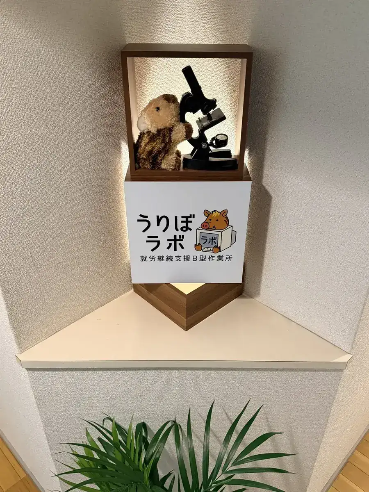
マルシェで手渡す。企業のアメニティになる。宇宙にまで届く。あなたの仕事は、ちゃんと社会につながります。
定員20名の少人数制。通所日数や時間は相談しながら決めます。同じグループが運営するグループホームとも連携し、暮らしごと支えます。
「社会の主流から見落とされがちな人にこそ、経済的に自立できる仕組みが必要だと思っています。うりぼラボは、その実験室です。」— 合同会社Uribo 代表社員 藤原 寛
作業所っぽくない作業所
ここは、アクセサリー制作・マルシェ出店・農産物・SNS発信・アプリづくりまで、実践的でリアルなサービス運営に関われる“ちょっと変わったB型作業所”。
失敗しても大丈夫。立ち止まってもいい。
ひとつずつ、自分のペースで、“自信”をつくっていく場所です。
「困りごと」から生まれる“しごと”を育てる場所。 鹿児島から全国へ。
Ways to work · DX特化型
あなたの「得意」に合う仕事が、ここにあります。
作業は4つの柱から選べます。1つに絞る必要はありません。日によって、気分によって、組み合わせて構いません。
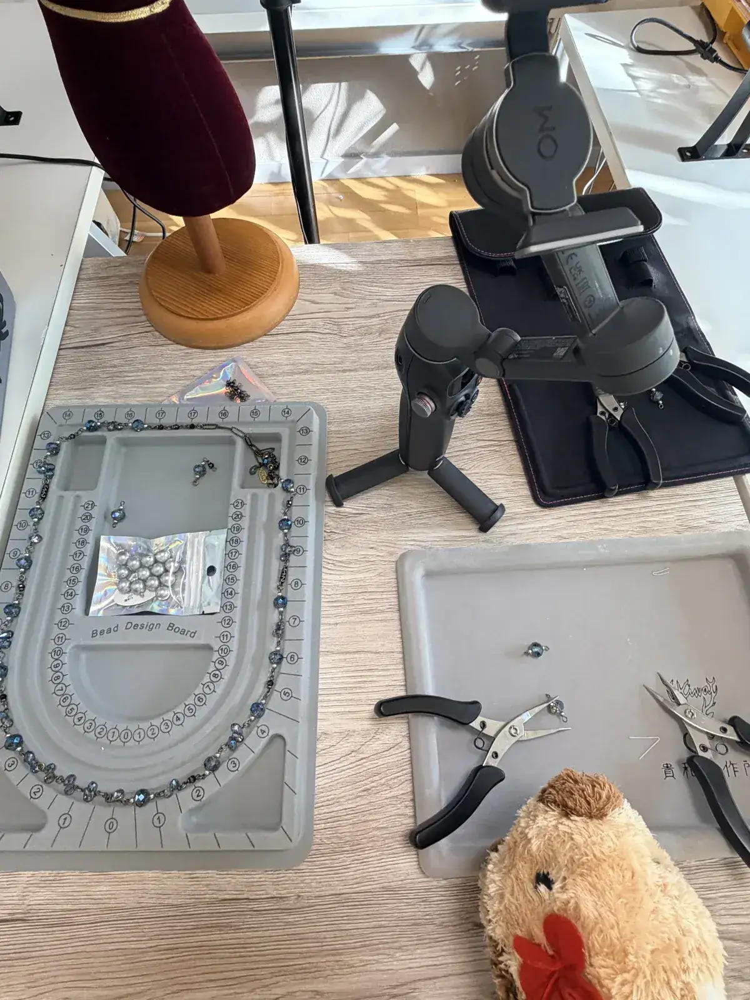
01 / ACCESSORY
アクセサリー｜手を動かす人へ
クリスタルガラスのビーズ仕分け、パーツ組み、検品、梱包。アクセサリーブランド「IVY（アイビー）」の作品づくりを支える仕事です。細かい作業が好きな方、集中するのが得意な方に向いています。週1回、作家を講師に招くアクセサリー教室も開催しています。
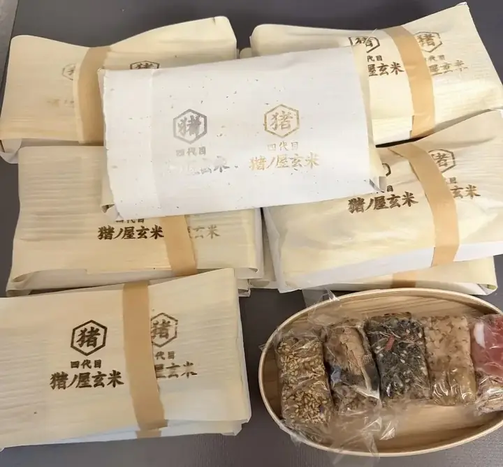
02 / FARM & FOOD
農園・食｜土と関わる人へ
薩摩川内市祁答院の農園と連携し、猪ノ屋玄米（長岡式酵素玄米）の袋詰めや、規格外野菜の仕分けを行います。ラボ1階の花壇での栽培も準備中。身体を動かしたい方に。
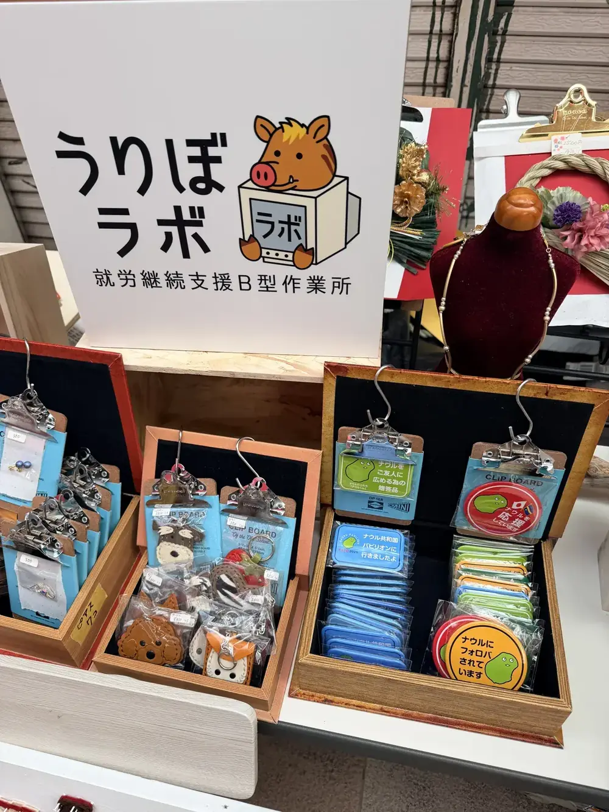
03 / MARKET
販売・マルシェ｜人と話す人へ
毎月1回の「Uriboマルシェ」のほか、県内各地のマルシェにアクセサリーブランド「IVY（アイビー）」として出展し、自分たちの商品を直接お客様に届けます。「ナウル政府観光協力店」として缶バッジなどのグッズ販売も。接客が好きな方、外に出たい方に。
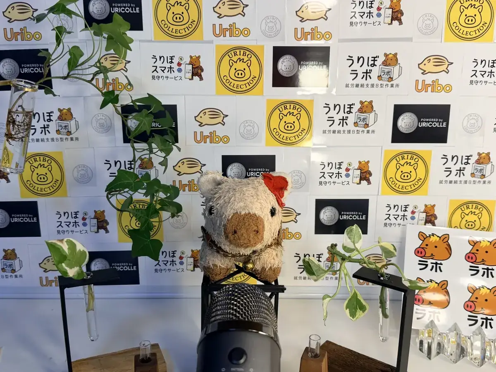
04 / DIGITAL & IDEA
デジタル・企画｜頭で考える人へ
SNS投稿、チラシ作成、商品企画、売上記録。ラボ発のスマホ見守りサービス「あのね」・服薬支援システム「のんだっけ？」のような仕組みづくりにも関わります。PCが好きな方、アイデアを出すのが得意な方に。
作業ができない日があっても大丈夫です。在宅での作業も、ご相談に応じます。
Projects & impact
小さな作業所から、こんなものが生まれました。
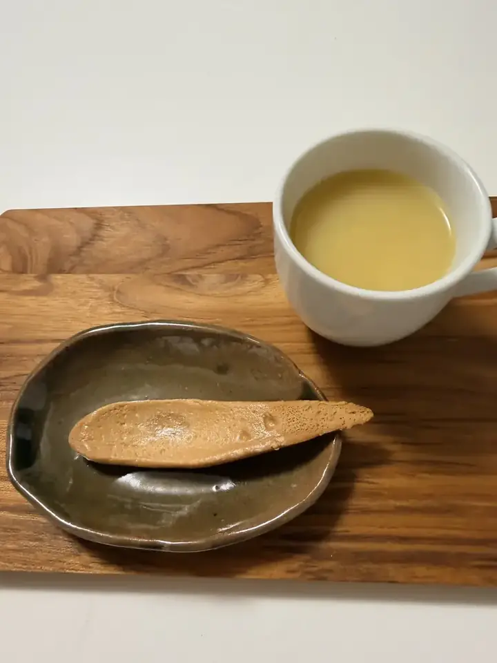
PROJECT 01
宇宙で食べられるスプーン
鹿児島の企業と協業し、宇宙食向けの「食べられるスプーン」プロジェクトに参加。南日本新聞、西日本新聞、毎日新聞デジタル、時事ドットコム、PRESIDENT Online、東洋経済オンライン、NewsPicks、NIKKEI COMPASS、テレ東プラス、TBS NEWS DIG、財経新聞、ニコニコニュースなど、12以上のメディアに取り上げられました。
特設サイト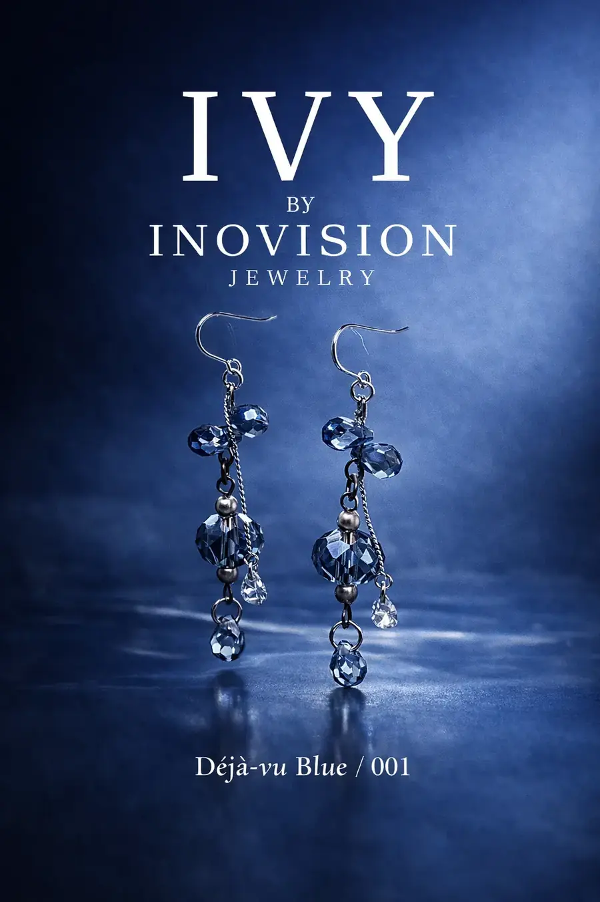
PROJECT 02
うりぼラボ ✖️INOVISION JEWELRY
アクセサリーブランド「IVY（アイビー）」。オーストリア製の最高峰クリスタルガラスを使ったピアス・イヤリングを、ラボがビーズ仕分けから支え、マルシェで販売しています。1点3,000円。売上は作家とラボで分け合う仕組みです。
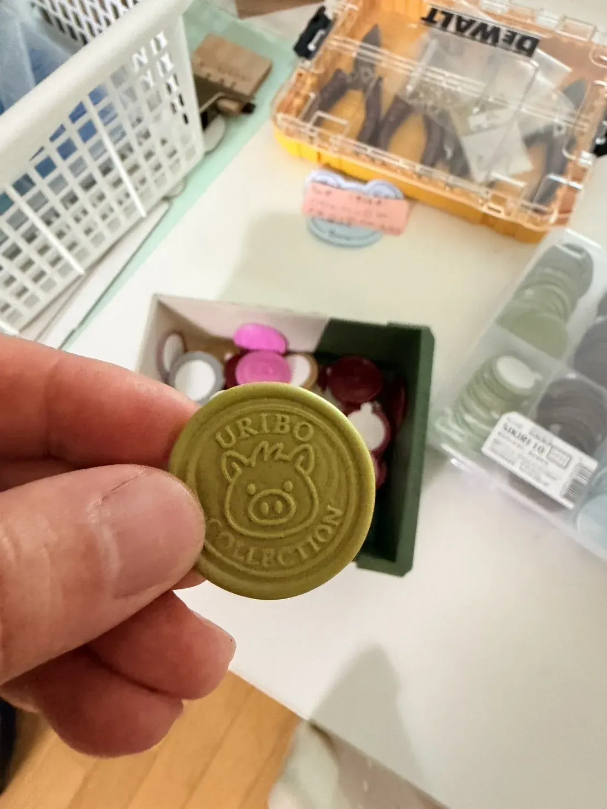
PROJECT 03
Uriboコレクション
鹿児島の他のB型作業所の商品も預かり、住宅展示場や保険会社のプレゼント用アメニティとして企業に届けています。作業所同士がつながる「物販の窓口」です。
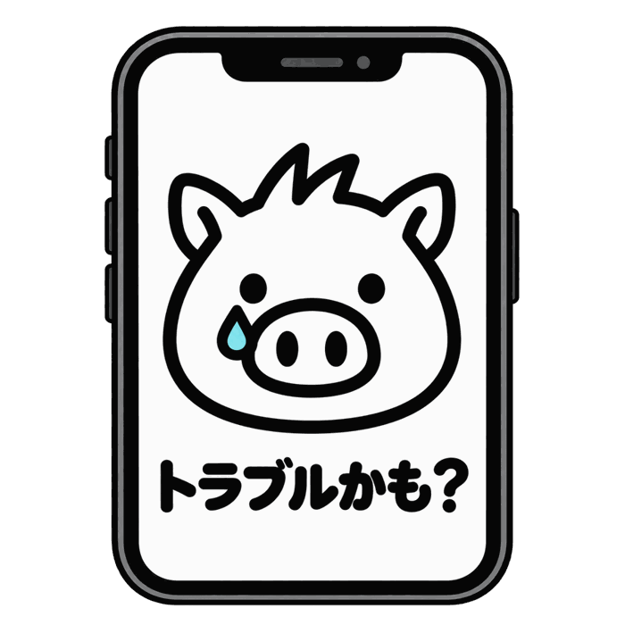
PROJECT 04
あのね／のんだっけ？
現場の困りごとから生まれた、障がいのある方向けのスマホ見守りサービス「あのね」と、服薬支援システム「のんだっけ？」。特許出願中の技術を、ラボから発信しています。
PROJECT 05
ナウル政府観光協力店
太平洋の島国ナウルの公式観光協力店として、ラボ内に小さなショップを運営。世界とつながる入口です。
メディア掲載
南日本新聞西日本新聞毎日新聞デジタル時事ドットコムPRESIDENT Online東洋経済オンラインNewsPicksNIKKEI COMPASSテレ東プラスTBS NEWS DIG財経新聞ニコニコニュース
A day at Uribo
ある日のうりぼラボ。
年中無休で開所しています。送迎もあります。午前のみ、午後のみの通所も相談できます。
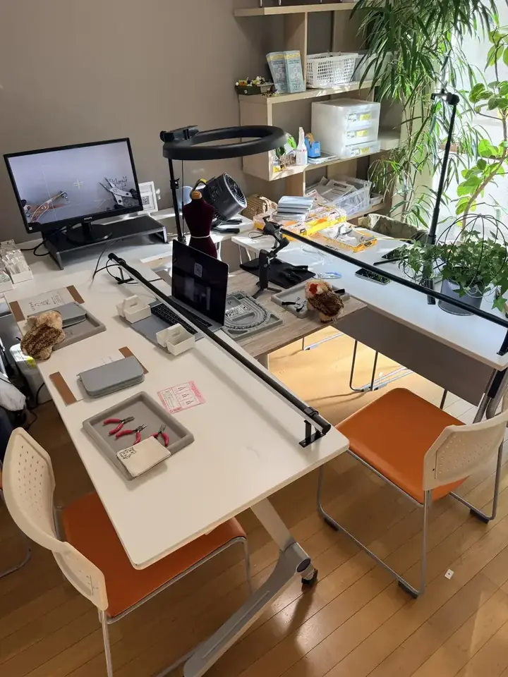
出勤・体調チェック・今日の作業を相談
午前の作業（アクセサリー／農園／企画など）
昼休み
軽食あり。400円相当の軽食を施設補助200円つき・自己負担200円で提供。お弁当持参も可
午後の作業・マルシェ準備
片付け・日報・明日の予定
退勤
フレックスタイム導入
9:45〜14:45の間で、自分の体調に合わせて出退勤が可能です。年中無休なので、曜日も日数も相談して決められます。
送迎サービスあり
鹿児島駅 ⇔ うりぼラボ。通所時間に合わせて、1時間おきに送迎車が運行します。朝がつらい日でも、自分のタイミングで通所可能です。
軽食提供（自己負担200円）
栄養バランスを考慮した400円相当の軽食を、施設補助200円つきの半額200円で提供しています。お弁当持参も可能です。
協賛企業によるサポートプログラム
仕事だけでなく、暮らしと自立を支えるプログラムを協賛企業と一緒に用意しています。
- 01 ストレッチ教室インフルエンサー・ストレッチモデルが指導
- 02 はじめての自炊教室季節の食材と栄養バランス
- 03 SNS運用教室撮影スタジオを備えたラボで学ぶ
- 04 お金の使い方相談室FP／成年後見人とZoom面談
- 05 スマホ相談室消費者ネットワーク団体正会員・依存症支援員が対応
Uribo by numbers
数字で見るうりぼラボ
How to start
見学から利用まで、5つのステップ。
お問い合わせ
LINE・フォーム・電話のどれでも。「話を聞くだけ」で大丈夫です。
見学
ラボの雰囲気と作業を実際に見ていただきます。ご家族・支援者の同席歓迎。
体験利用
数日間、実際に作業を体験。合う・合わないを確かめてください。
受給者証の申請
お住まいの市区町村での手続き。相談支援事業所と一緒にサポートします。
ご契約・利用開始
通所日数・時間を相談して決め、スタートします。
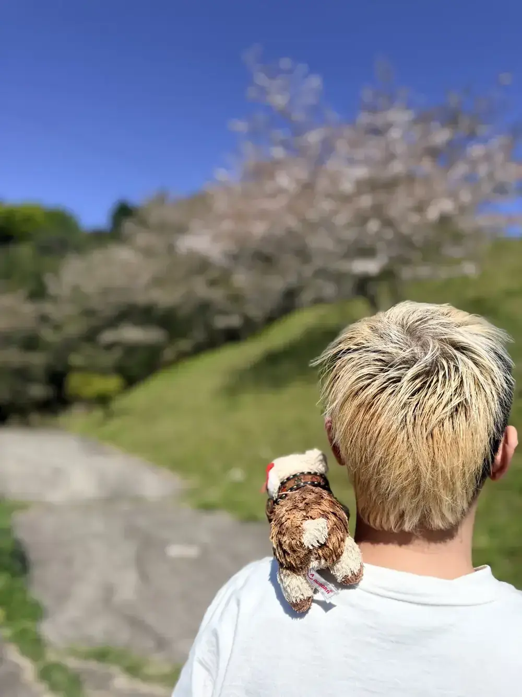
FAQ
よくある質問
障害者手帳がなくても利用できますか？
医師の診断書等があれば利用できる場合があります。まずはご相談ください。
工賃はいくらですか？
実績ベースで1日800円です。売上に応じた向上を目指しています。
毎日通わないといけませんか？
いいえ。年中無休なので、曜日も日数も自由に組めます。週1日から、午前だけ・午後だけも相談できます。在宅での作業も応相談です。
送迎はありますか？
はい、送迎があります。エリアや時間はご相談ください。
昼食はどうしていますか？
軽食を提供しています。400円相当の軽食に施設から200円の補助がつくので、自己負担は200円です。お弁当の持参も可能です。
利用料はかかりますか？
世帯収入に応じた自己負担上限があり、多くの方は無料で利用されています。
グループホームと一緒に利用できますか？
はい。同じグループが運営する「うりぼベース玉里・清水」と連携しています。
見学は家族だけでもできますか？
はい、ご家族・支援者のみの見学も歓迎です。
Message
代表挨拶
自分のペースで無理なく働く
つまずきや、まわり道から生まれる“しごと”を
このうりぼラボから鹿児島へ、そして全国へ。
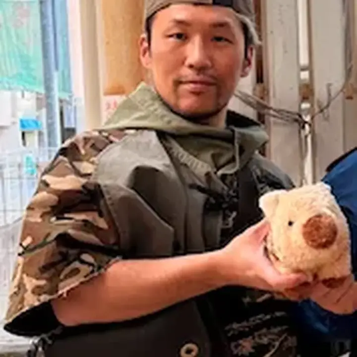
東京で広告とネットワークシステムの仕事に携わったのち、過労で心身を崩し、沖縄へ。そこでのボランティア経験が福祉に進む転機になりました。鹿児島ではグループホーム支援や依存症自助会の運営に関わり、「得意を活かし、苦手は補い合う『支え合う場』」こそが人を前に進ませると確信しました。うりぼラボは、鹿児島で受けた恩を「自分たちで仕事を生み出す支援」で返すための場所です。
全文を読む
私は東京で広告やネットワークシステムの仕事に携わっていましたが、過労から心身のバランスを崩し、環境を変えるために沖縄へ移りました。そこでのボランティア経験が、福祉の道に進む転機になりました。
鹿児島に来てからは、障がい者グループホームの支援、更生施設でのプログラム提供、薬物乱用防止の啓発活動、Zoomを使った依存症自助会の運営に関わってきました。その中で確信したのは、「得意なことを活かし、苦手は補い合う『支え合う場』」こそが人を回復させ、前に進ませるということです。
うりぼラボは、鹿児島で受けた恩を「自分たちで仕事を生み出す支援」で返すために立ち上げました。だからこそ、この場所に込めた想いは強く、本物です。
うりぼラボは、ただ「働く練習」をするための場所ではありません。つまずいた過去を否定せず、「それでも、また始めてみよう」と思える——そんな「回復と挑戦の実験室」です。社会との距離を感じているあなたへ。ここは、もう一度、自分らしさを見つけ直す場所です。どうか、あきらめずに訪ねてきてください。
合同会社Uribo 代表社員／うりぼラボ管理者 藤原 寛
誰もが立ち止まったり、引き返したりできる場所。
障がい特性や、安定しない精神状態への理解がある職場です。挑戦しても、立ち止まっても、引き返してもいい。年中無休・フレックスタイム・送迎で、「今日は行ける」を逃しません。
「実際の仕事」で役割と信頼を育てる。
アクセサリーブランドIVY（アイビー）の商品、猪ノ屋玄米、Uriboコレクション、マルシェ出店。グループが実際に運営するサービスの一部を担うので、単なる「作業」ではなく「誰かの役に立っている」実感が持てます。希望される方には、グループ企業での社員雇用を目指すステップアップの道も用意しています。
テクノロジー×福祉の最前線に挑戦する。
スマホ見守りサービス「あのね」、服薬支援システム「のんだっけ？」など、現場の困りごとから生まれた仕組みをラボから発信しています。同じ経験を持つ仲間同士が支え合う、新しい形の支援です。特許出願中の「見守り支援システム」にも関われます。
People & place
少人数だから、一人ひとりを見ています。
職員は福祉と事業づくりの両方の経験を持つメンバーです。作業を教えるだけでなく、「これを仕事にするには」を一緒に考えます。代表も同じ机で手を動かしています。
鹿児島市清水町のマンション1室。落ち着いた空間で、静かに作業できます。
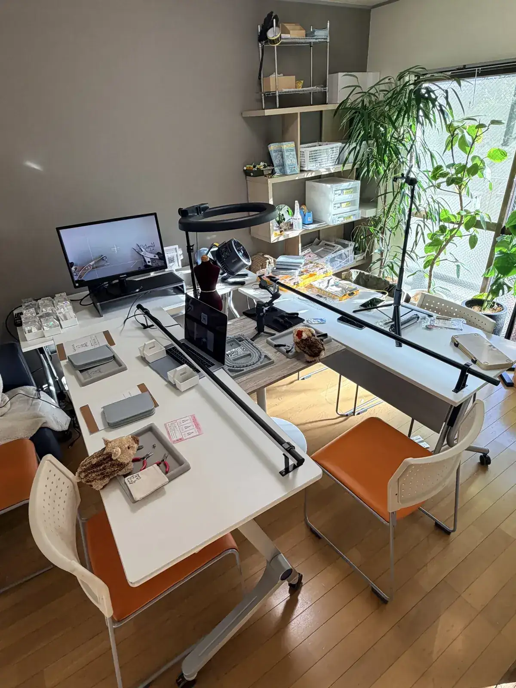
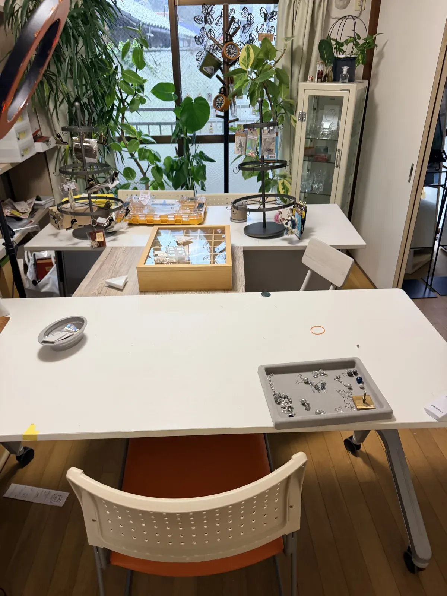
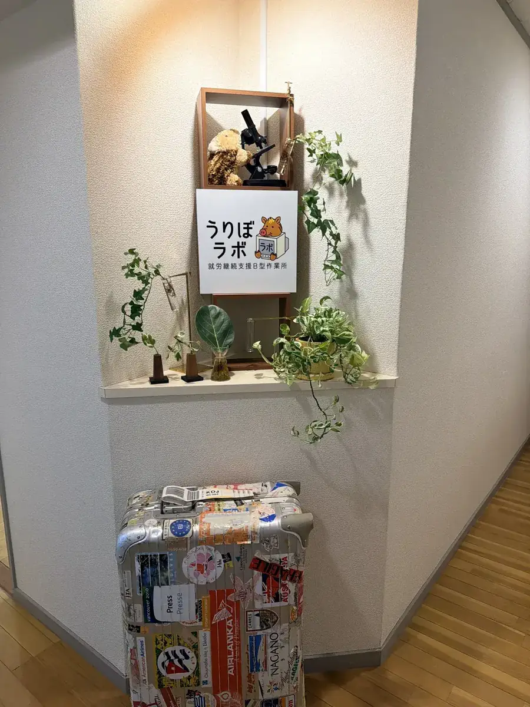
Uribo group
働く、暮らす、つくる、届ける。Uriboの仲間たち。
うりぼベース玉里
鹿児島市玉里団地のグループホーム（定員4名）
うりぼベース清水鹿児島市清水町のグループホーム
IVY（アイビー）
猪ノ屋玄米作家と協業するアクセサリーブランド
長岡式酵素玄米
Uribo全体LPグループ全体の紹介
HOUSE OF INOYA
うりぼラボは、HOUSE OF INOYA の一員です。
鹿児島と東京・広尾を拠点に、福祉・食・ものづくり・知財を横断するグループ。ひとつの作業所ではできないことを、グループの力で実現しています。
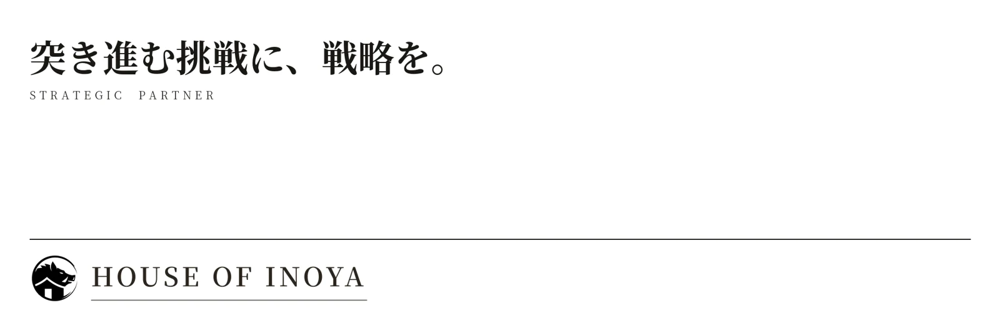
HOUSE OF INOYA を見る（inoya.tokyo）Visit & contact
「話を聞くだけ」で、大丈夫です。
気軽な方法を選んでください
電話：070-8482-5454（営業時間中はいつでもどうぞ。担当：服部）
所在地：〒892-0802 鹿児島市清水町12-15 ロイヤルハイツ清水102号室
見学・体験のお申し込み
〒892-0802 鹿児島市清水町12-15 ロイヤルハイツ清水102号室
会社概要を見る
| 事業所名 | DX特化型・事業創出型 就労継続支援B型作業所 うりぼラボ |
|---|---|
| 所在地 | 〒892-0802 鹿児島県鹿児島市清水町12-15 ロイヤルハイツ清水102号室 |
| 事業所番号 | 4610108328（令和7年10月1日指定） |
| 電話番号 | 070-8482-5454（営業時間中はいつでもどうぞ） |
| メール | info@urilabo.com |
| 開所日 | 年中無休（送迎あり） |
| 代表者 | 藤原 寛（ふじわら ひろし） |
| 運営法人 | 合同会社Uribo 〒899-4325 鹿児島県霧島市国分松木町18-27 ルミナーレスカイ206号室 |
| グループ | うりぼベース玉里／うりぼベース清水（グループホーム）、IVY（アイビー）、猪ノ屋、Uriboコレクション、スマホ見守りサービス — HOUSE OF INOYA |